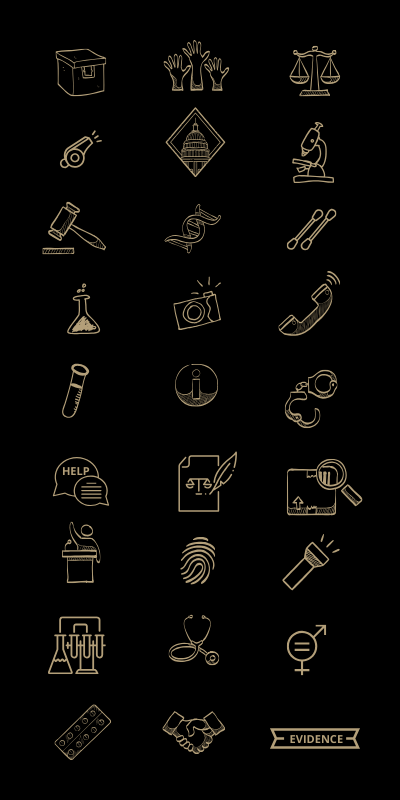
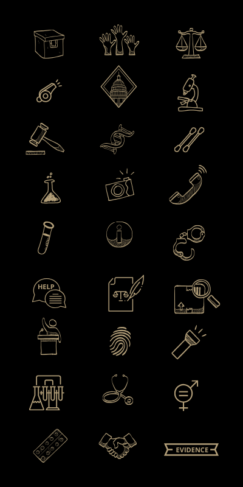
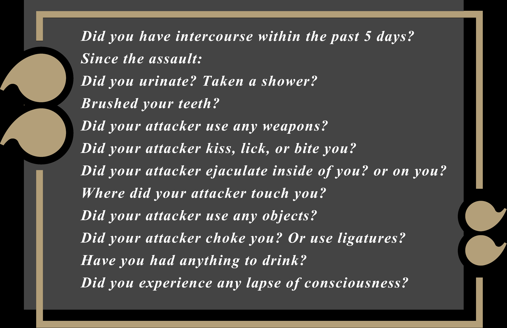

If you are in immediate danger call 911
Trigger warning :
This piece contains information about sexual assault
In the United States, many survivors of sexual assault must endure a lengthy, invasive physical and verbal examination to help authorities gather evidence to pursue and press charges against their attackers. Survivors who endure this process, known as the Sexual Assault Forensic Examination, or SAFE, often see their exam results languish in a backlog of cases. This project seeks to illustrate the experience of sexual assault survivors who go through the SAFE process. Use the menu above to jump to a particular section, or scroll through the project to learn more, watch videos, and experience a first person prespective a SAFE exam in virtual reality.
Scroll to begin

These are an example of the questions a sexual assault survivor will answer on the California adult sexual assault forensic medical report form Cal OES 2-923
to begin their arduous journey of reporting their sexual assault.
After a sexual assault, survivors who decide to get medical examination and help often wait for hours in a hospital room in order to get a Sexual Assault Forensic Examination (SAFE.) A nine-page questionnaire on the survivor’s assault is filled out by a qualified Sexual Assault Nurse Examiner (SANE) with the help of the survivor.
“The reporting process a lot of times is a lot more traumatic than the actual assault...It’s an added trauma to survivors,” said Sexual Assault Trauma Counselor from the Rape Trauma Center, Cindy Marroquin.
After the examination, survivors may choose to complete the report and press legal charges against their attackers. Sexual assault kits are a survivor’s evidence of the attack. One of the only factors of having the legal system escalate an assault case to the courts.
The lack of reinforcement and completion of the tests could be due to a shortage of SARTs and SANEs to examine victims, ineffective laws that oppress victims, lack of monetary resources to sheriff departments, and cases that aren’t prosecutable in the eyes of law enforcement. Leaving victims with the impotence of having filled out an extensive traumatic test after a traumatic event, and still be left without legitimate basic information to their legal case.
What is SAFE?
In the United States, the Sexual Assault Forensic Kit includes a verbal report, a patient examination, and DNA evidence is collected Within five days before evidence starts disappearing or getting contaminated.
Every SAFE survivor is allowed the presence of an advocate in the room with them to help guide them through the process. Not every Sexual Assault Response Team (SART) working with survivors offers that resource.
“Sometimes, survivors don’t feel like they’re there yet,” said Marroquin about patients deciding to consider themselves a survivor and not a victim. She has seen multiple cases of recent-attack survivors as she is an advocate during the SAFE collections. She holds survivors’ hands, provides water or warm blankets for some comfort during the examination.
Within approximately three to five hours, an extremely personal questioning and search for crumbs of information from the survivor is performed by a Sexual Assault Nurse Examiner (SANE.) The questions will range from mildly personal like “When was the last time you brushed your teeth?” to utterly triggering like “Did your attacker use any objects to penetrate you?”
After finishing the questionnaire, the survivor is examined from head to toe. A survivor’s mouth and limbs are swabbed, fingernails are scrapped, and pubic hair combed for fibers and DNA. Vials of blood and urine samples are gathered.
The survivor’s body is examined under a blue light to help any biological material show up, like semen or saliva that is photographed under a UV light, with a ruler to show the size.
Photographs of the survivor’s face, and of any injuries or bruises including the survivor’s genitals are photographed and are paired with their chart.
The usage of images as evidence of survivors’ bruises or marks around the neck is released to law enforcement. Patients often have questions pertaining to the camera used and the type of access to their photos after their exam. “It’s the genital photos that are not released unless there’s a subpoena,” said the director of the Keller Center of San Mateo, works in collaboration with law enforcement to process victims of violence forensically, Tricia Tayama. When the exam is over, the nurse places the biosamples in a container about the same size as a shoebox. The nurse seals it — the SAFE kit — and entrusts it to a criminalist from the Sheriff’s forensic lab department.
Sexual Assault Forensic Immersive Exam
This video is a virtual reality immersive experience of a sexual assault forensic exam (SAFE). If you choose to go through the experience, you’ll take the prespective of a sexual assault survivor. The experience has five sections, each section will proceed only with the approval of the viewer by pressing “Yes” when prompted to emphasize that survivors have agency over the exam.
To View on a desktop, or with a VR headset using the Youtube VR App
Why a backlog exists?
A backlog occurs when a SAFE kit sits on a shelf, sealed, and untested by the criminalists at the Sheriff’s department, according to the End The Backlog activist movement, a non-profit organization conducting research to identifying the extent of the country’s rape kit backlog and response to sexual assault. There is no comprehensive data available to estimate how many sexual assault kits across the country remain untested. Experts at End The Backlog estimate there are 13,615 untested SAFE kits in California alone.
“They aren’t all untested kits.” said supervising forensic criminalist with the San Mateo Sheriff’s Department, Alice Hilker, about backlogged kits.
Kits that were partially tested years ago will be considered backlogged but may have indeed had some work done on them in the past. If the biological specimens were not collected thoroughly, were poorly stored, or were just a “he said, she said” case, are untested in most cases.
Explaining that “he said, she said” cases are when both the sexual assault survivor and the attacker have had a prior relationship to the attack. In most cases, law enforcement agencies are quick to drop these types of cases because they know it isn’t a winning case and have no probability for a resolution; leaving the SAFE kit unprocessed.
“What happens as a result of law enforcement bias, is that if they think a case is he said she said, they don’t move that case forward for analysis,” said Marilyn Peterson the Director for the California Clinical Forensic Medical Training Center
Another factor of incompletely tested kits, according to Peterson, is the failure to recognize that sexual assaults committed by someone known to the victim are as serious as a strangers’ assaults.
The San Mateo Sheriff’s department didn’t provide a response to requests for comment.
How is California overcoming backlogs?
A 2019 passed bill on rape kits testing, Bill SB22 , states that all SAFE kits should be submitted to law enforcement agencies and crime labs no later than 20 days after the crime occurs. Rape kits must be tested within 120 days after receiving them. The bill, authored by Senator Connie Leyva, representing the 20th district, now signed by Gov. Gavin Newsom, requires enforcement to test newly collected rape kits promptly in the state.
“Candidly, I had no idea we had such a backlog,” said Leyva. She said she was “shocked” that sexual assault survivors go through the process of forensic examination, after having such a horrible crime perpetrated on their body, yet their kit ends up sitting on a shelf in a police department for unclear reasons. This matter has become a priority to her after listening to sexual assault survivors’ stories, she said. “To me, by not testing rape kits, it’s like we’re telling to {these} women that we don’t value you.” she added.
Sexual Assault Response Teams Roadblocks
Another constant obstacle a survivor can face is the insufficient Sexual Assault Response Teams (SARTs) in California. There are 49 exam teams in the state serving the 58 counties, according to Marilyn Peterson the Director for the California Clinical Forensic Medical Training Center
SARTs respond medically and forensically to victims of sexual assault, 12 years and older, and may provide expert testimony if a case goes to trial.
The exams can take place in any kind of hospital in counties with a population of a million or more, like Sacramento, according to statute Penal Code Section 13823 .5- 11 hospitals designated in counties with a population of 100,000, the size of Mendocino county. This statute also clarifies that these exams could take place in any kind of hospital in counties with a population of a million or more, like Sacramento.
Sexual Assault Response Teams in California
Dots represent SART locations, and populations served per county. Color gradient based on population
Data sources: CCFMTC & Census
There’s a major undeserving of the California central valley. Places like Fresno, Kern, King, Madera, Mariposa, Merced, and Tulare counties combined have a population of 2.9 million people and are served by the same SART located at Fresno, based on the database provided by California Clinical Forensic Medical Training Center (CCFMTC), and Census data.
The Fresno Healing Center serves six other counties because each county cannot afford to have an independent exam team. “The low volume of exams does not bring in sufficient revenue to financially support a team,” said Peterson. The volume of sexual assaults reported in these areas does not warrant having an independent team.
The examiners in those small counties do not develop sufficient expertise to become skilled examiners who are able to testify in court. “It’s better that these counties are served by one main team that can be financially supported by revenue and examiners who develop sufficient expertise to conduct exams and testify in court as expert witnesses,” said Peterson.
Help and Resources
The Rape Trauma Center
If you or someone you know has been hurt, directly or indirectly, by
sexual violence and you need to talk, please call the RTS confidential 24 Hour Crisis Line : 650-692-7273
The crisis line is free and callers may choose to remain anonymous.
Specially trained sexual assault counselors are available 24 hours a day, everyday on 650.692.RAPE (7273).
https://www.rapetraumaservices.org/
National Sexual Assault Hotline
Need help? Call 24-Hour Free Confidential Crisis Line: 800-656-4673 to be connected with a trained staff member from a sexual assault service provider in your area. When you call 800.656.HOPE (4673), you’ll be routed to a local RAINN affiliate organization based on the first six digits of your phone number. Cell phone callers have the option to enter the ZIP code of their current location to more accurately locate the nearest sexual assault service provider. https://www.rainn.org/about-sexual-assault
Other Resources
Sexual Assault:
California Coalition Against Sexual Assault
Rape, Abuse, and Incest National Network
National Center for Victims of Crime
National Sexual Violence Resource Center
Child Sexual and Physical Abuse Links:
National Clearinghouse on Child Abuse and Neglect
Prevent Child Abuse America
Domestic Violence Links:
National Domestic Violence Hotline
AMA Clinical Guidelines
California Partnership to End Domestic Violence
Futures Without Violence
National Resource Center on Domestic Violence
State of California Commission on the Status of Women
Human Trafficking:
Coalition Against Trafficking in Women
Prostitution Research and Education, USA
Coalition Against Trafficking in Women
Special Thanks to :
Unity Developer, Kevin HSU.
VR Production Team, Emily O’neal & Michelle Bao.
Geri Migielicz & Serdar Tumgoren
© 2020 Salma Loum